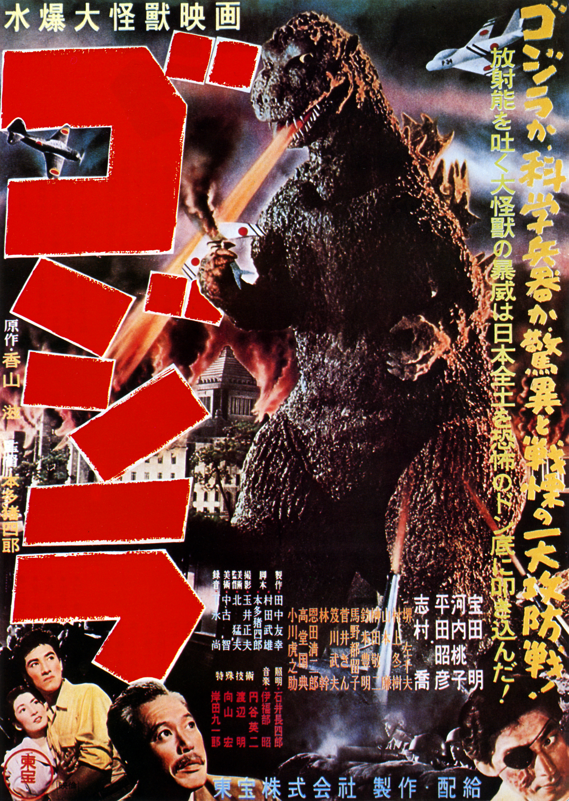

Godzilla 1954
El primer Godzilla, introducido en 1954, es un ícono del cine de monstruos...
El primer Godzilla, introducido en 1954, es un ícono del cine de monstruos...
Esta versión estadounidense de Godzilla es conocida por su diseño único...
_poster.jpg)
Esta versión estadounidense de Godzilla es conocida por su participacion y el creador del monstervers...
Esta versión de TOHO de Godzilla es conocida por que es un dios encarnado y condenando a vivir...
Otra versión de TOHO de Godzilla es conocida por su enorme tamaño...
Otra versión de TOHO de Godzilla cuyo version es de amenasa multiversal...

Esta versión de TOHO de Godzilla que recrea ala primera version